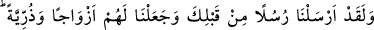
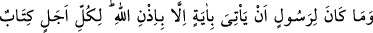
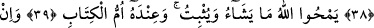
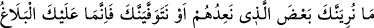
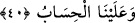

ALLAH DİLEDİĞİNİ SİLER,
DİLEDİĞİNİ SÂBİT BIRAKIR
38. Andolsun biz senden önce de peygamberler gönderdik. Onlara da eşler ve
çocuklar verdik. Allah’ın izni olmadan hiçbir peygamber mûcize getiremez. Her
müddetin yazıldığı bir (kitap) vardır.
39. Allah dilediğini siler, dilediğini sâbit bırakır. Bütün kitapların aslı O’nun
yanındadır.
40. Biz onlara vâdettiğimizin (azâbın) bir kısmını sana göstersek de veya (ondan
önce) senin canını alsak da sana ancak (Allah’ın emirlerini) tebliğ etmek düşer.
Hesap yalnız bize aittir.
Ey Muhammed! “Andolsun biz senden önce de” senin gibi birer insan olan
“peygamberler gönderdik.”
Bu ifade, peygamberin mutlaka melek olması gerektiğini söyleyen müşriklere verilmiş
bir cevaptır.
Senin hanımların ve çocukların olduğu gibi “onlara da eşler ve çocuklar verdik.” Bu,
onlar hakkında câiz oluyor da senin hakkında niye câiz olmasın?
Bu ifade ise “Bu adamın kadından ve evlenmeden başka işi gücü yok! Peygamber
olsaydı, sadece zühd ve ibadetle meşgul olurdu.” diyen yahudilere verilmiş bir cevaptır.
et-Te’vîlâtü’n-Necmiyye’de der ki: “Peygamberleri daha başlangıçta ilâhî bir inâyet
cezbedince onları beşerî-hayvânî derekelerden rûhânî velâyet mertebesine yükseltir.
Daha sonra da bu derecelerden alıp son olarak rabbânî risâlet ve nübüvvet mîrâclarına
yükseltir. Böylece onlarda tabîat îcâbı eşler istemeye, canlı olmanın gereklerinden
olarak çocuklarına meyletmeye zorlayan beşerî bir istek ve nefsânî hüküm kalmamıştır.
Bilakis Allah yaratıcılık sıfatını ortaya çıkarma konusunda halîfelik özelliği ile şerîata
uygun olarak onlarda hanımlara ve çocuklara rağbet var etmiştir. Nitekim Allah Teâlâ
şöyle buyurur: “Onu siz mi yaratıyorsunuz, yoksa Yaratıcı olan biz miyiz?” (el-
Vâkıa, 56/59)
Hakîm Tirmizî Nevâdiru’l-usûl’de şöyle der: “Peygamberler, peygamberliğin